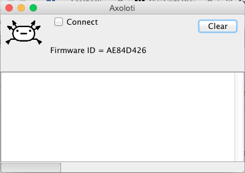

Hello!
I noticed a couple of times that suddenly there is two connection windows open on my screen... One of them is called developer the other one is regular window. Sorry I cannot give a picture example now, cause I forgot to snap a picture of it. Will do next time. It have happened numerous times.
I think this is very mysterious. Does the developer have got any access to my computer besides of updating factory & community library? Which is done when I push the sync libraries button and only then?
I mean this window. Next to the text "Axoloti" in the top of the second window that opens says (developer).

Thanks